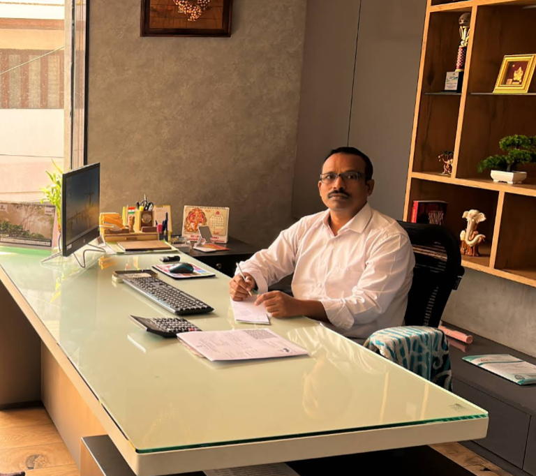

Founder
A trusted name in the cement wholesale industry with over 25 years of experience, known for building strong relationships, reliable supply systems, and a respected business presence in Visakhapatnam.
Mr. M. R. Prasada Raju founded Sri Lakshmi Traders with a clear vision — to build a dependable and trustworthy cement supply business that prioritizes long-term relationships over short-term gains.
Over the past two decades, he has successfully grown the company by maintaining consistency in supply, ensuring customer satisfaction, and adapting to changing market demands.
His deep understanding of the cement market and commitment to ethical business practices have been key to the company’s sustained growth and reputation.
```These principles have shaped Sri Lakshmi Traders into a reliable and respected supplier in the construction ecosystem of Visakhapatnam.
```Under his leadership, Sri Lakshmi Traders has achieved recognition as a top-performing dealer in Nagarjuna Cements at the state level and has built a strong presence across multiple cement brands.
The company continues to serve a wide customer base including contractors, builders, and individual customers, maintaining a reputation for reliability, consistency, and professionalism.
```For any purchase enquiries, kindly contact us — we ensure prompt response and competitive pricing.
Back to Home ```